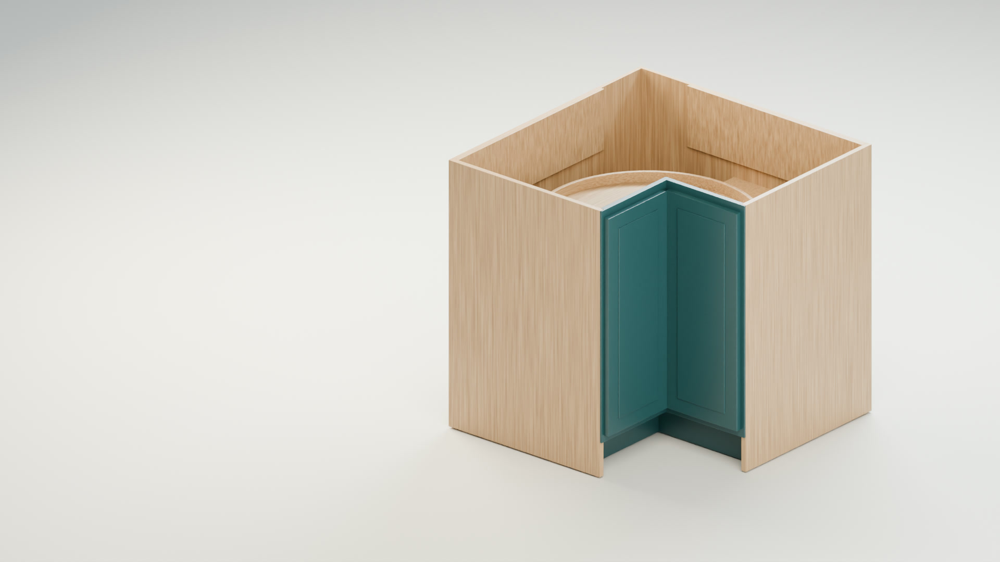

Follow the parts.
Look at how the panels approach, where they connect, and the sequence that brings the cabinet together.

SCR36 / FROM DRAWING TO POSSIBILITY
See what your Lazy Susan cabinet could look like finished—and how the connections bring it together.
Watch the film 48 SECONDS / PRODUCT FILM01 / THE IDEA ON PAPER
The dimensions define the cabinet. The visualization helps you see the finished piece, follow the assembly, and start a more useful conversation about the connections.
The film interprets this drawing with an illustrative finish and assembly sequence.
02 / THE POSSIBILITY IN MOTION
From the first panel to the final turn.
Watch the cabinet and its metal channel locks come together.
The panels align and slide into place, with circles marking all connections moving together. A square cutaway follows the metallic E3259BM channel lock as it seats and slides.
At the rear corner, the panel flexes slightly before returning flush. The film marks the flex point and reminds the assembler: “Be careful while flexing.” The trays and retaining pins follow, then the interior rotates before the finished exterior is revealed.
This is a product visualization, not a complete installation procedure. Finishes, some dimensions, and assembly details are illustrative. Confirm the design, machining and full installation sequence with Lockdowel.
SEE MORE. DISCUSS THE DETAILS.
Look at how the panels approach, where they connect, and the sequence that brings the cabinet together.
The metallic channel locks and synchronized close-ups make the seating and sliding motion easier to understand.
Two rotating trays, a considered interior, and a finished exterior give the drawing a new perspective.